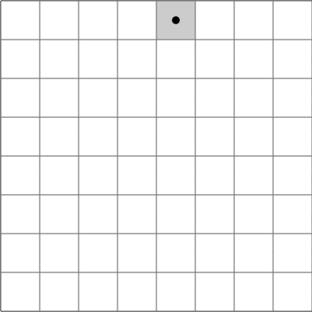
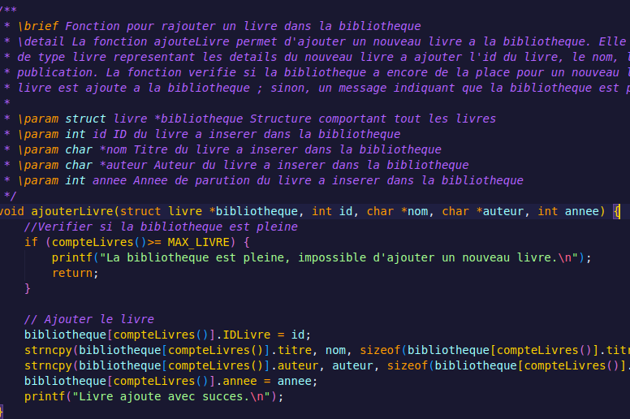
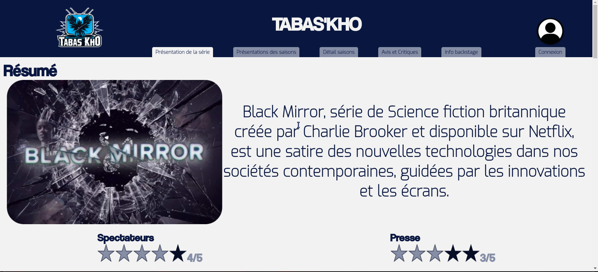

Sudoku
Ce projet consiste en l'implémentation d'un jeu de Sudoku en langage C, conçu pour permettre à un utilisateur lambda de jouer au Sudoku avec une grille de n'importe quelle taille. Le programme permet aux utilisateurs de fournir leur propre grille de Sudoku, prenant en charge des dimensions variées telles que 3x3, 4x4, 5x5, et au-delà.
Optimisation d'applications

Problème du Tour du Cavalier
Ce projet explore le célèbre problème du tour du cavalier en implémentant deux algorithmes distincts en Python et en comparant leur efficacité. Le problème du tour du cavalier consiste à déplacer un cavalier sur un échiquier de manière à ce que le cavalier visite chaque case exactement une fois.
Administrer des systèmes complexes

Générateur de Documentation Technique
Ce projet consiste en la création d'un générateur de documentation technique qui transforme le code source en C en un document PDF détaillé. Le programme lit les fichiers source en C, extrait les commentaires et les descriptions, puis génère automatiquement un document PDF bien structuré.
Gérer des données de l'information

Création, Peuplement et Analyse Statistique d'une Base de Données
Ce projet concerne la mise en place d'une base de données pour un établissement scolaire. Il s'agit de trois étapes clés : la création de la base de données, son peuplement avec les données pertinentes, et l'analyse statistique des informations collectées.
Conduite de projet

Création d'un site de streaming
Ce projet vise à développer une plateforme de streaming vidéo personnalisée, répondant aux besoins spécifiques du client. Il comprend l'analyse des besoins, la conception de la charte graphique, la conception du site via Figma, et le codage en HTML, CSS et JavaScript. La gestion du projet est assurée via GitHub pour une collaboration efficace.
Travailler dans une équipe informatique

Création d'un évennement de team building
Ce projet a consisté à organiser un événement de team building innovant autour de l'entreprise AstenLabs, avec pour objectif de renforcer les liens entre les membres de l'équipe et de stimuler leur motivation de façon fictive. Le projet a inclus la création d'un flyer et la réalisation d'un court film événementiel. Il a également renforcé mes compétences en organisation d'événements et en production de contenu audio-visuel.